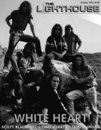

CMnexus
:
Contemporary Christian culture, music, and media.
Browse Magazines
Browse Profiles
cmnexus.org
CM
nexus
→
Magazine list
→
The Lighthouse
→
Issues
The Lighthouse
, Oct 1993, vol. 2, iss. 9
< -- Prev
Issue list
Next -- >
Cover

Writers in this Issue
Appelinski, Roger
Blinn, Beth
Brendley, Bryan W
Henry, Julie
Soditus, J. Warner
Whiteheart
Cover Feature:
Whiteheart
by Beth Blinn
Article:
Two Hearts
by J. Warner Soditus
Scott Blackwell
by J. Warner Soditus
Tami Cheré Gunden
by J. Warner Soditus
Album Review:
World Wide Message Tribe
-
World Wide Message Tribe
by Roger Appelinski
Shack of Peasants
-
Gospel Blues
by Beth Blinn
Kenny Marks
-
Absolutely Positively
by Roger Appelinski
Andy Landis
-
Stranger
by Bryan W Brendley
Harvest
-
Mighty River
by Julie Henry
Karthi
-
Karthi
by Roger Appelinski
Scott Springer
-
Hello Forever
by Beth Blinn
Fear Not
-
Fear Not
by Beth Blinn
Brother Brother
-
Young Warriors
by Roger Appelinski
Concert Review:
"Selinsgrove, PA" by Bryan W Brendley
David Meece
Relevant Links
You may be able to find
The Lighthouse
in a library near you:
check
Worldcat
< -- Prev
Issue list
Next -- >
CMnexus
(noun)
The magazine index
of modern music
and Christianity
© 2011 CMnexus. Last updated September 2019.
Contact:
Rants and other correspondence to:
editor -AT- cmnexus
-DØT- org
About